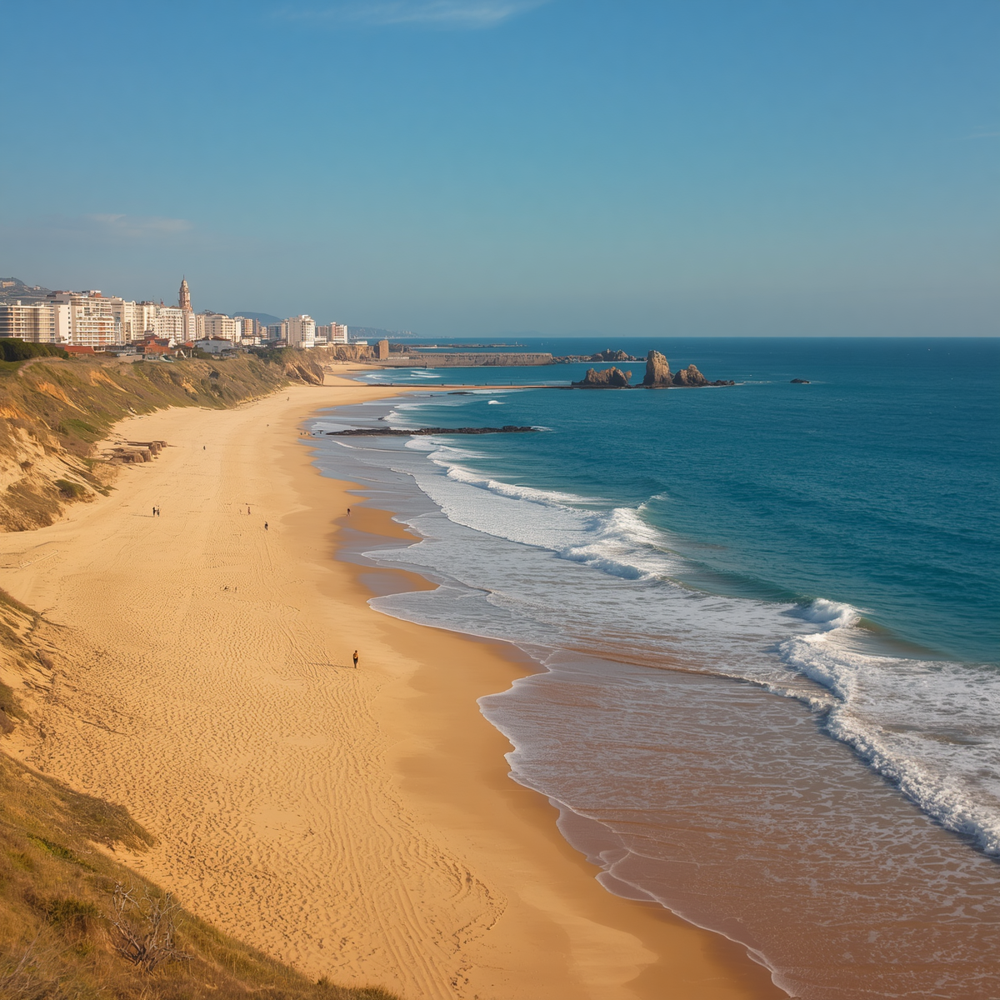
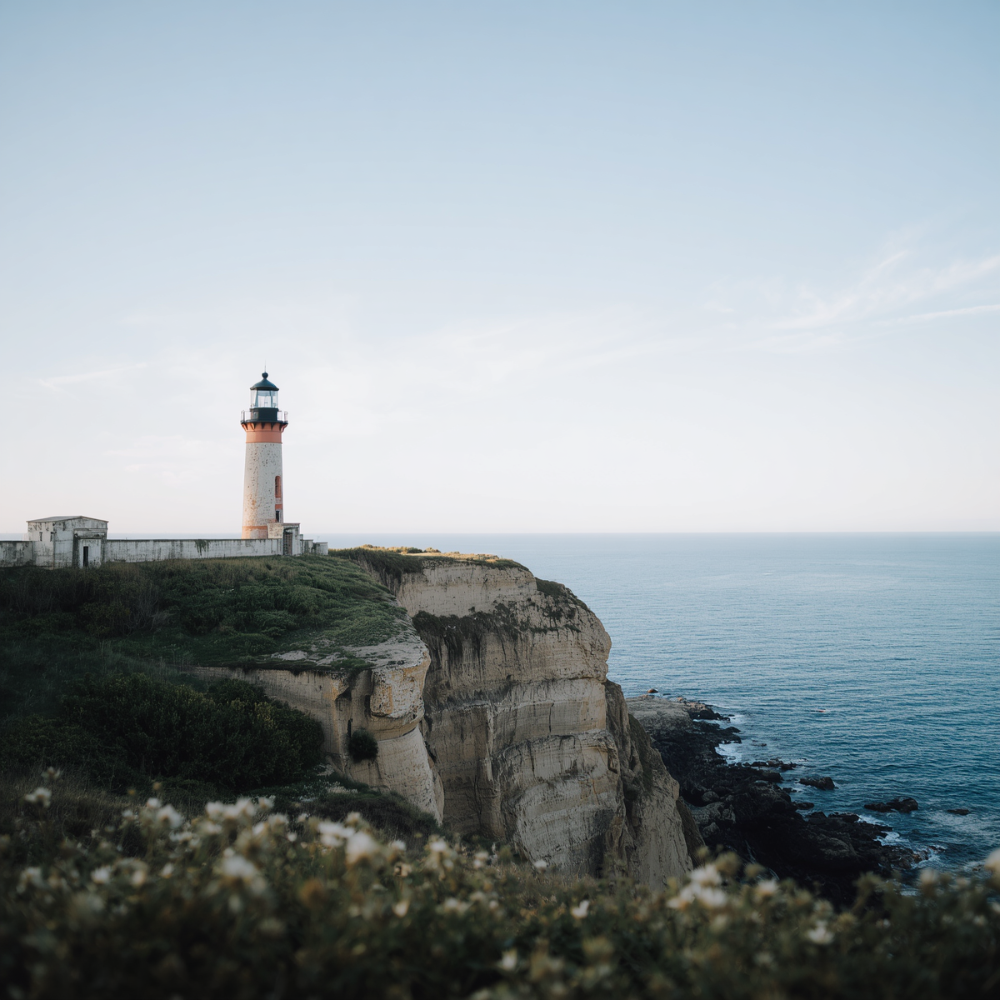
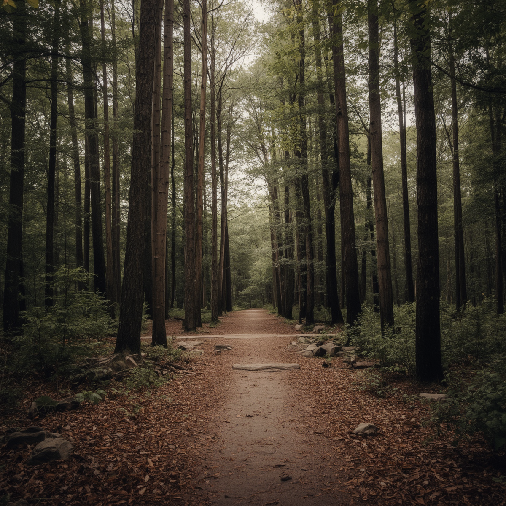

Lunaria reúne el mar, los acantilados y el bosque en un paisaje que forma
parte de su historia desde la llegada de los primeros navegantes en 1817.
Hoy, sus lugares de interés permiten conocer ese pasado ligado a la pesca
y la navegación, disfrutar de la naturaleza y descubrir por qué la ciudad
promueve un turismo que cuida sus paisajes.
Playa de los Navegantes

La Playa de los Navegantes es una de las postales más reconocidas de
Lunaria. Su arena dorada y sus vistas al océano recuerdan la relación
que la ciudad mantiene con el mar desde sus comienzos, cuando la pesca
era la principal actividad de sus habitantes. Es un lugar elegido para
caminar junto a la costa, descansar y disfrutar del paisaje.
Ubicación: zona costera norte.
Actividades: nadar, caminar y practicar surf.
Horario de visita: Todos los días, de
a
.
Faro de Lunaria

Inaugurado en 1898, el Faro de Lunaria se construyó para orientar a los
barcos y reducir los accidentes causados por los acantilados de la costa.
Su torre de piedra se convirtió en uno de los principales símbolos de la
ciudad y todavía guía a los navegantes. Desde sus alrededores, los
visitantes pueden contemplar el océano y la costa.
Ubicación: acantilado sur.
Actividades: tours guiados y fotografía.
Horario de visita: Todos los días, de
a
.
Bosque de la Luna

El Bosque de la Luna es una reserva natural que protege parte del bosque
original de Lunaria. Sus árboles y su vegetación fueron importantes para
los primeros habitantes, que aprovecharon los recursos del lugar para
construir viviendas y obtener alimentos y plantas medicinales. También
es conocido por la luz de la luna que, según la historia de la ciudad,
iluminó sus hojas durante la noche en que llegaron los navegantes.
Actualmente, sus senderos permiten recorrer el entorno y observar la
naturaleza con cuidado.
Ubicación: zona montañosa del este.
Actividades: senderismo, observación de aves y fotografía.